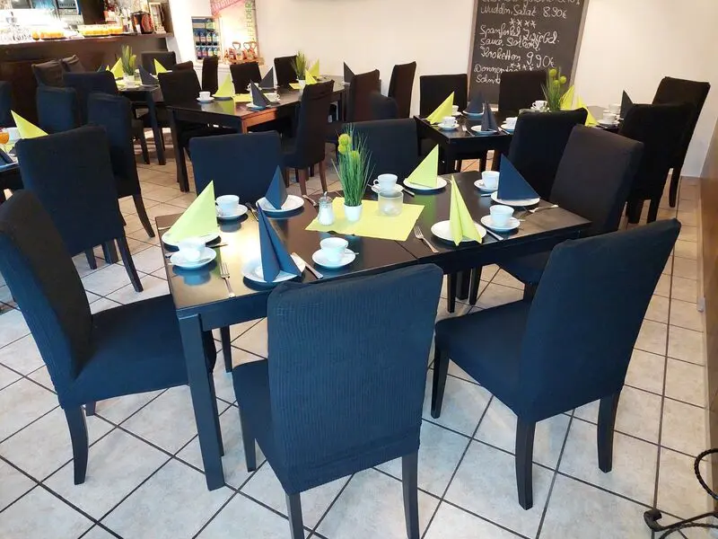
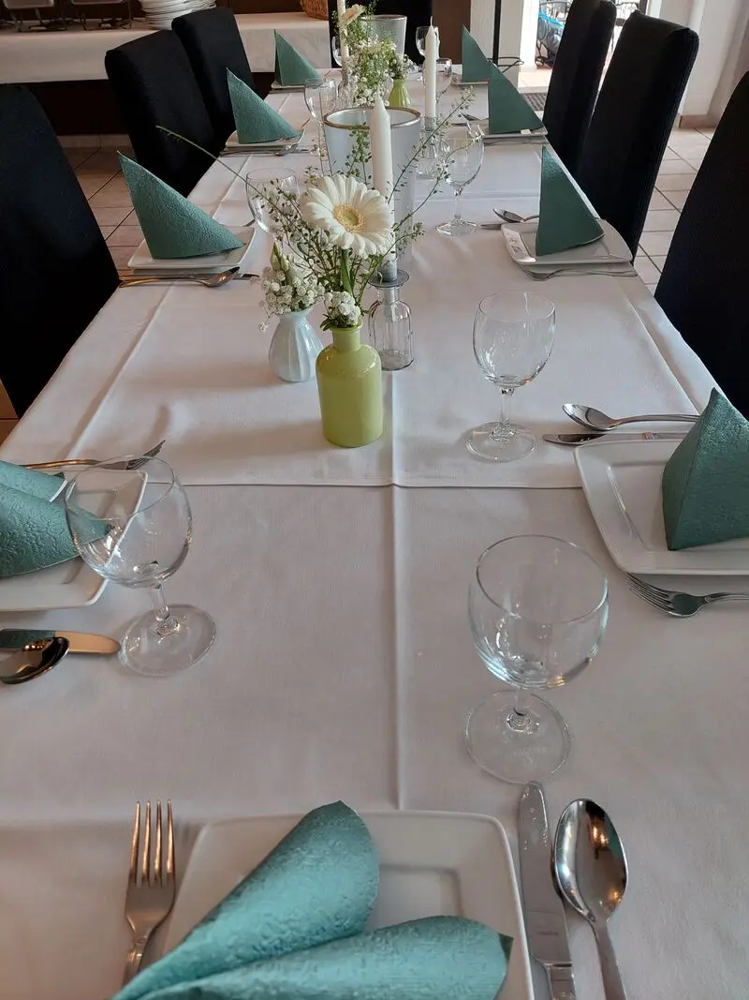
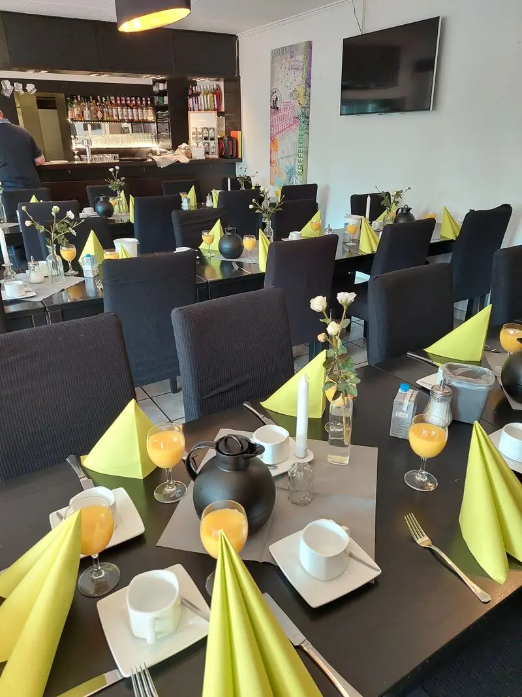
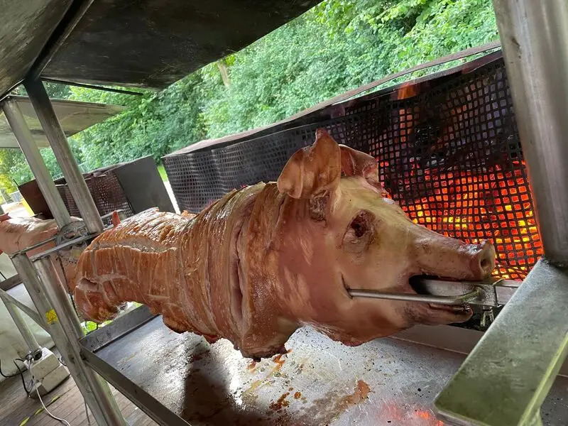

Restaurant & café in the city park
The Point im Stadtpark Uerdingen
Dear guests, we are delighted to welcome you to our restaurant in the beautiful Rhine town of Uerdingen.
Dining in the green
Welcome to The Point in Uerdingen city park. Enjoy a delicious breakfast, a coffee to go during your walk, a hearty traditional lunch, coffee & cake or a great dinner – hot food served all day.
- Breakfast
- Coffee to go
- Lunch
- Coffee & cake
- Dinner
- Tarte flambée
- Ice cream
- Hot dogs
- Hot food all day
Opening hours
| Monday | Closed |
|---|---|
| Tuesday | 10:00 – 22:00 |
| Wednesday | 10:00 – 22:00 |
| Thursday | 10:00 – 22:00 |
| Friday | 10:00 – 22:00 |
| Saturday | 13:00 – 22:00 |
| Sunday | from 10:00 – [PLACEHOLDER: time] |
Every week at The Point
Three fixed dates – every week.
Thursday
Schnitzel buffet
Our schnitzel buffet, every Thursday.
€13.90
Friday
Burger menu
On Fridays we serve our burger menu.
Saturday
Steaks & classics
Steaks and traditional German classics.
Right in the city park – dine with a view of the tennis court.
Gallery
A warm welcome to the cosy Point.
Feasting in a cosy atmosphere 
Celebrate special occasions with us 
From breakfast to dinner – everything your heart desires 
Regular events with special highlights
Events
Join us for our events.
[PLACEHOLDER: date]
Spare Ribs Buffet
We're going for round two!
Grab your seat while you still can!
Reserve a seat
No events are scheduled right now – give us a call and we will tell you about the next highlight.
Catering & celebrations
We deliver buffets, equipment and everything you need for your party. Whether it is a birthday, wedding, christening or company party – we are the right partner by your side.
Our services
- Buffet
- Catering
- Outdoor seating
- Private parties
- Takeaway
- Weddings
- Pets welcome
What our guests say
★★★★★
[PLACEHOLDER: real Google review]
★★★★★
[PLACEHOLDER: real Google review]
★★★★★
[PLACEHOLDER: real Google review]
Contact & directions
We are happy to take your reservation by phone.
- Phone
- +49 2151 470482
- thepoint-krefeld@gmx.de
- Address
- Nikolaus-Groß-Straße 32, 47829 Krefeld
Payment methods
- Cash
- EC card (Girocard)
- Visa
- Mastercard
- Maestro
- American Express
- Apple Pay
- Contactless